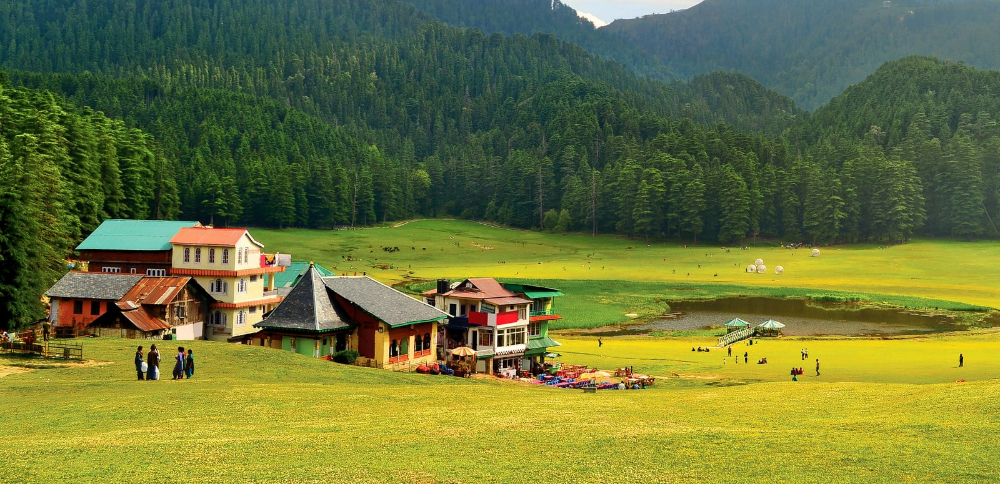
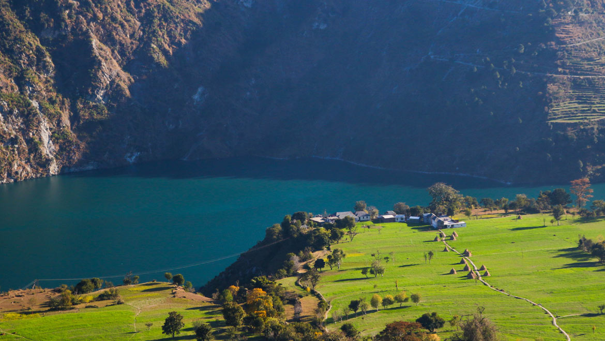
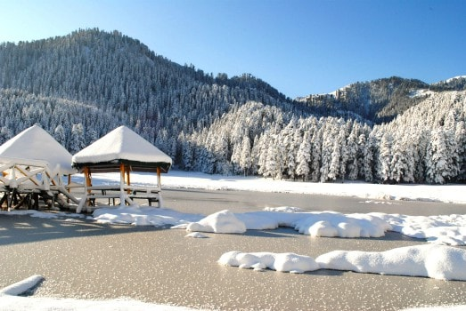

Situated far away from the buzzing cities in the country, Dalhousie is located in the lap of Himachal Pradesh.
It has mesmerising natural landscapes, pine-clad valleys, fast-flowing rivers,
magnificent misty mountains and flower-bedecked meadows.
How to reach there?
Dalhousie is a hill station in Chamba district of Himachal Pradesh. The airport which
is closest to Dalhousie is Gaggal Airport, approximately 130 kms away.
Additionally, about 80 kms away, there is Pathankot Railway which is the nearest railhead.
Several private and state buses of Himachal Road Transport Corporation (HPTC) and
Haryana Road Transport Corporation (HRTC) provide their services from nearby cities.
Top things to do?
Dalhousie itself attracts a large number of visitors every year. From nature trails to village excursions , local trains to
trekking , Dalhousie encompasses it all. You can enjoy boating at Chamera Lake. With a grand plethora of wild trees, flora, fauna,
grasslands, and views of snowcapped mountains, Kalatop wildlife sanctuary is perfect to go for trekking.


